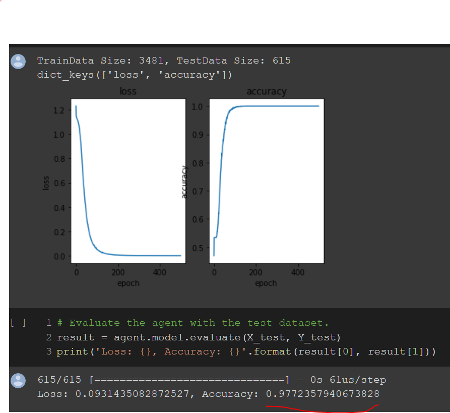

<mat-dialog-content>
    <mat-card>
        <mat-card-title>Fizz-Buzz Classification</mat-card-title>
        <mat-card-content>After going through Udemy and YouTube videos, I would like to start applying my basic
            knowledge on actually solving problems without using solutions from the internet so I chose something very
            basic. For FizzBuzz, I approach is as a supervised learning scenario.
            <div class='div-image-container'>
                
                
            </div>
        </mat-card-content>
    </mat-card>
</mat-dialog-content>